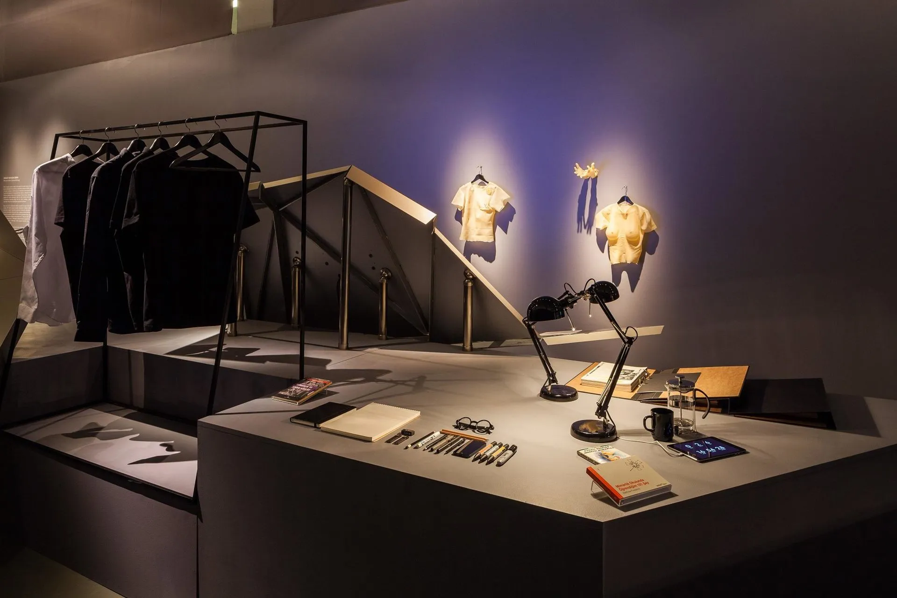
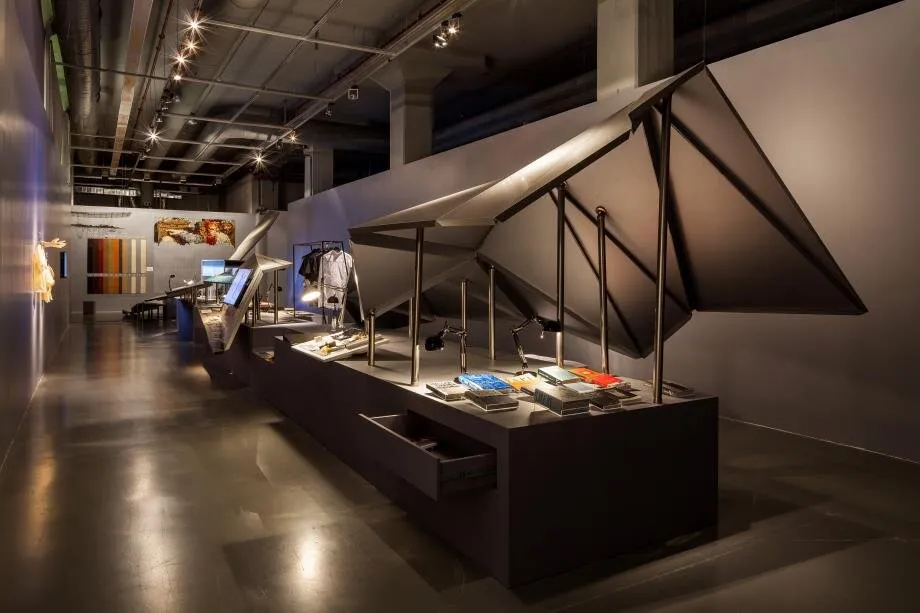
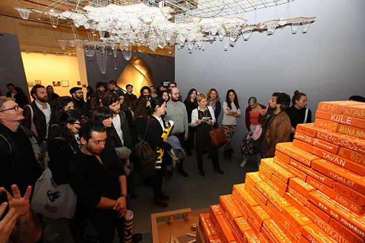

15152015
Dikkat! Kaygan Zemin / Caution! Slippery Ground
Exhibition (group), CuratingIstanbul Modern, VitrA Contemporary Architecture Series, TSMD- About
- Exhibition on architectural culture, 26 March to 31 May 2015, with salon talks and workshops; curated by Yelta Köm, coordinated by Pelin Derviş.
- Place
- Istanbul
- Role
- curator
- Links
- Source ↗



Press
- 03.02.2015VitrA Çağdaş Mimarlık Dizisi Sunar: Dikkat! Kaygan Zemin ↗Arkitera